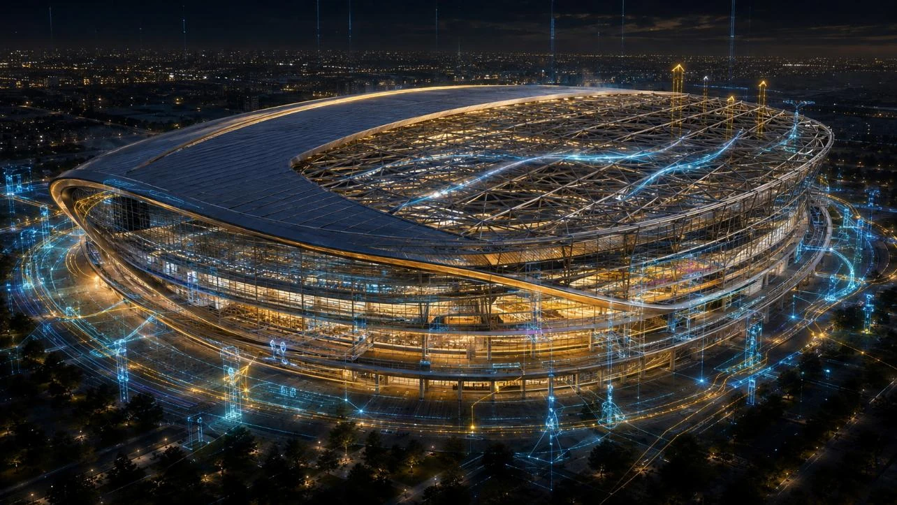
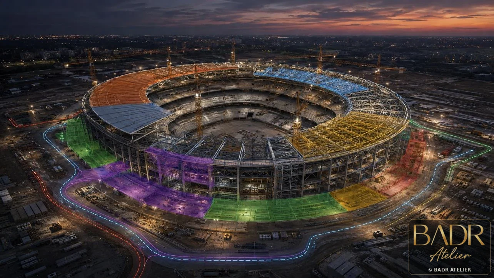

The model begins with the decisions it must support.
BIM + Digital Delivery
Digital delivery should make the project easier to decide, coordinate and build.
BADR treats BIM as decision infrastructure: a connected environment for model clarity, multidisciplinary coordination, 4D sequencing, 5D cost intelligence and project-specific delivery visibility.
Resolve interfaces while change is still cheaper and clearer.
Use 4D to turn programme logic into visible construction decisions.
Use 5D to make quantity, cost, change and procurement traceable.
Project-Based BIM Portfolio
Every project asks a different digital question.
Residential courtyards, sacred geometry, retail destinations, high-rise towers, mixed-use districts and arenas each demand a different BIM strategy.

Architecture-Led BIM
Andalus Courtyard Residences
A courtyard that becomes an information system.
Architectural BIMFederated ModelModel Coordination
View BIM Project ↗
Sacred Geometry + Digital Precision
Al Noor Grand Mosque
Coordinate sacred geometry without compromising reverence.
Geometry ControlStructural IntegrationMEP Routing
View BIM Project ↗
Retail Federation + Commercial Control
Souq Galleria Mall
Turn a retail destination into a coordinated delivery system.
Federated BIMAtrium SequencingRetail Phasing
View BIM Project ↗
Vertical Delivery Intelligence
Desert Pearl Residences
Make vertical complexity visible before the site feels it.
High-Rise FederationFloor-Cycle 4DMEP Risers
View BIM Project ↗
Mixed-Use Coordination
Wadi Court Mixed-Use
Coordinate the mixed-use layers without losing the urban experience.
Mixed-Use FederationPodium InterfacesVertical Coordination
View BIM Project ↗
Time-Linked Arena Delivery
Falcon Arena Concept
Build the arena in time before building it on site.
Arena FederationCrowd + AccessRoof Erection
View BIM Project ↗BIM FILM • DESIGN → BUILD → OPERATE
Diplomatic BIM + Lifecycle
Pakistan Consulate Villa
Carry diplomatic identity from design information into construction and asset continuity.
DesignBuildOperate
View BIM Project ↗4D
Time Becomes Part of the Model.
Phasing, access, heavy lifts, workfronts and commissioning become visible before they become site pressure.
Explore 4D Portfolio ↗
5D
Cost Becomes Part of the Design Conversation.
Model, quantity, cost, procurement and change are connected into one traceable commercial information chain.
Explore 5D Cost Intelligence ↗
Digital Delivery Strategy